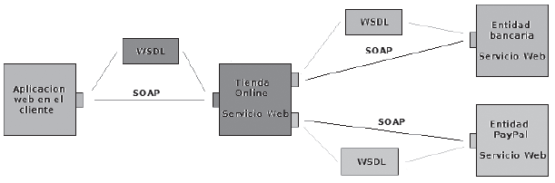
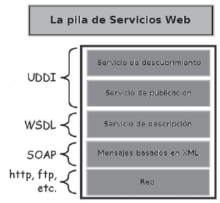

Con la aparición de Internet, a mediados de la década de los 90, comenzaron a extenderse una gran variedad de desarrollos software y hardware. Estos sistemas, tenían unas peculiaridades muy diferentes. Es cierto que las diferentes ramificaciones surgidas enriquecían el panorama tecnológico, no solo a nivel software si no a nivel hardware también. Al existir tal diversidad, las empresas vieron la necesidad de integrar estos sistemas, de tal forma que pudieran comunicarse, para poder colaborar en sus objetivos unos sistemas con otros.
El afán de las empresas se encauzo en desarrollar la mejor tecnología que integrara los sistemas. Pero según avanzaba la competencia, resultaba más complicado desarrollar este producto. Debido a la rápida aceptación del fenómeno de Internet y el fuerte impacto que causaron las tecnologías de la información, las relaciones de negocio y comunicación cambiaron radicalmente. El uso de las tecnologías de la información en la vida cotidiana, las exigencias de integrar diferentes sistemas (tanto hardware como software), se volvió algo prioritario. Las empresas veían inviable crear una plataforma integradora de forma individual. Por esta razón algunas empresas emprendedoras, buscaron un lenguaje común que intercambiara información.
Para ello aprovecharon estándares existentes en el mercado, que además iban a facilitar que se extendiera más esta tecnología. A partir de estas necesidades surgidas, se crean los servicios web. Un servicio web es un conjunto de protocolos y estándares que permiten comunicar dos sistemas a través de una red. Habitualmente los servicios web actúan para intercambiar datos (comunicarse), entre dos aplicaciones. Estas aplicaciones suelen estar desarrolladas en lenguajes de programación distintos. Además pueden estar en plataformas (sistemas operativos o arquitecturas) diferentes.
La operabilidad de los servicios web se consigue a través de estándares abiertos que gestionan organizaciones como OASIS (Organization for the Advancement of Structured Information Standards), consorcio internacional, sin ánimo de lucro, que orienta su desarrollo a la adopción de estándares para el comercio electrónico y los servicios web.
Otro de los consorcios internacionales que produce recomendaciones para los servicios web, es W3C. Estos son los comités responsables de la reglamentación de los servicios web. Para mejorar la interoperabilidad entre distintas implementaciones de servicios web, se ha creado el organismo WS-I. A continuación se muestra un esquema conceptual de cómo se comunican varios servicios web:

En la figura se observa como el perfil de usuario (aplicación web en el cliente), que tiene el rol de cliente del servicio web. solicita información sobre los productos de una tienda on line. Este usuario realiza una petición a la tienda on line a través de un servicio web. En última instancia, el usuario (aplicación web en el cliente), compra un producto y realiza el pago al servicio web de la entidad bancaria o al de Paypal dependiendo el modo de pago que haya elegido, a través de la tienda on line. En todo este proceso intervienen una serie de tecnologías que hacen posible la circulación de la información.
Un servicio web es un conjunto de protocolos que sirven para intercambiar información entre aplicaciones. Estos protocolos se consideran independientes y los autores, acostumbran a no encuadrarlos en una documentación común. El objetivo, es dinamizar las posibilidades de comunicación, seleccionando el protocolo adecuado a casa caso particular. Aun así, al conjunto de servicios y protocolos de un servicio web, se le llama Web Services Protocol Stack (pila de protocolos de servicios web). Esta colección de protocolos y estándares, sirve para definir, implementar, localizar y hacer que un servicio web interactúe con un cliente. La pila de protocolos se divide en cuatro partes que podemos denominar, servicios. En la siguiente imagen se muestra la pila de protocolos:

En la figura anterior, visualizamos los cuatro servicios de la pila de protocolos de un servicio web. En la capa inferior, se encuentra el servicio de transporte. En la siguiente capa (XML Based Menssaging), está el servicio de mensajería. En la tercera capa (Service Description), se describirá el servicio web. La capa superior es la encargada de facilitar el descubrimiento de los servicios web.
- Servicio de transporte: El servicio de transporte, es el responsable del envío de mensajes entre las aplicaciones a través de la Red. Este servicio, trabaja al nivel más bajo, encargándose de cómo se codifica la información, sin preocuparse de su formato. Es el encargado de establecer la conexión y el puerto que se va a usar. Generalmente se utiliza el protocolo HTTP, el mismo protocolo que utiliza la World Wide Web. La razón de que la mayoría de los servicios web hagan uso de este protocolo, es el uso tan extendido de los navegadores web. A través de Internet, los clientes hacen uso de los servicios web.
- Servicio de mensajería: Este es el servicio responsable de la codificación de los mensajes. En él se especifica que contienen los datos que se intercambian entre las maquinas. El lenguaje utilizado para los mensajes es XML. Extensible Markup Languaje (XML). XML nos permite definir la gramática del propio lenguaje. Además este lenguaje es independiente del protocolo de transporte. De esta forma tenemos un bajo acoplamiento entre los servicios. Existen varios protocolos para este servicio, que interactúan con el lenguaje XML para ofrecer el servicio de mensajería. Uno de los más usados es SOAP, pero también hay otros, como, XML-RPC (remote procedure call mediante XML) que utilizan el servicio de transporte HTTP exclusivamente. Otro de los protocolos en este servicio es REST (Representational State Transfer), una técnica de arquitectura software para sistemas, que maneja tipos de datos distribuidos en la Web.
- Servicio de descripción: A la hora de comunicarse, el cliente de un servicio web y el propio servicio web, tienen que llegar a un acuerdo. Deben decidir los detalles del transporte de los mensajes y el contenido de los mismos a través de un documento. Resulta necesario que se especifique la sintaxis y los mecanismos de intercambio de mensajes. De esa forma las aplicaciones involucradas conocerán de forma automática el formato que tienen que utilizar para comunicarse. A esta especificación se le llama descripción del servicio y se usa para describir la interfaz pública de un servicio web. Habitualmente se utiliza WSDL (Web Services Definition Service). Este protocolo se encarga de describir la funcionalidad del servicio web, cuando es publicado. El lenguaje utilizado para describir los servicios web es XML.
- Servicio de descubrimiento: El punto anterior, nos indica que WSDL utiliza un lenguaje neutro. Se define un lenguaje común, a partir del cual se va generando el código correspondiente adaptado a cada cliente. Por lo tanto, el servicio de definición (WSDL) va a ser reutilizable para todos los clientes que se quieran conectar a él. Una vez que se ha construido una descripción WSDL para un servicio web, este va a poder ser consultado por los posibles clientes del servicio web, para implementar los métodos que permite el servidor. Esta reutilización de código hace necesario un sistema de publicación de los WSDL que estén construidos. El servicio de descubrimiento, es el encargado de esta misión. Un servicio de descubrimiento es el que centraliza un registro común de servicios web, de manera que las empresas que generan servicios web, puedan publicar su localización y descripción. De esta forma podemos descubrir los servicios web que hay disponibles en la Red. El consorcio internacional sin ánimo de lucro OASIS sufraga el principal catalogo de negocios de Internet, al cual se le denomina UDDI. UDDI (Universal Description, Discovery and Integration) es un servicio de directorio donde las empresas pueden registrar y buscar servicios web. Este registro en el catalogo se realiza en XML. UDDI es un marco independiente a la capa del servicio de descripción visto anteriormente. Los documentos XML se guardan en sistemas UDDI de compañías que aceptan mantener los documentos. A estos documentos se los llama, nodos. Además estas empresas respetan el consorcio UDDI. A los documentos almacenados se los denomina ficheros de registro.